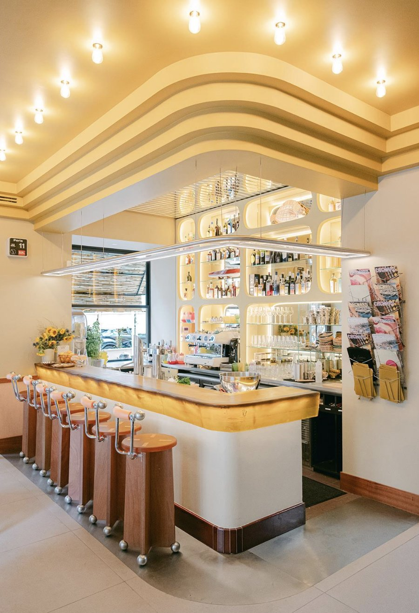
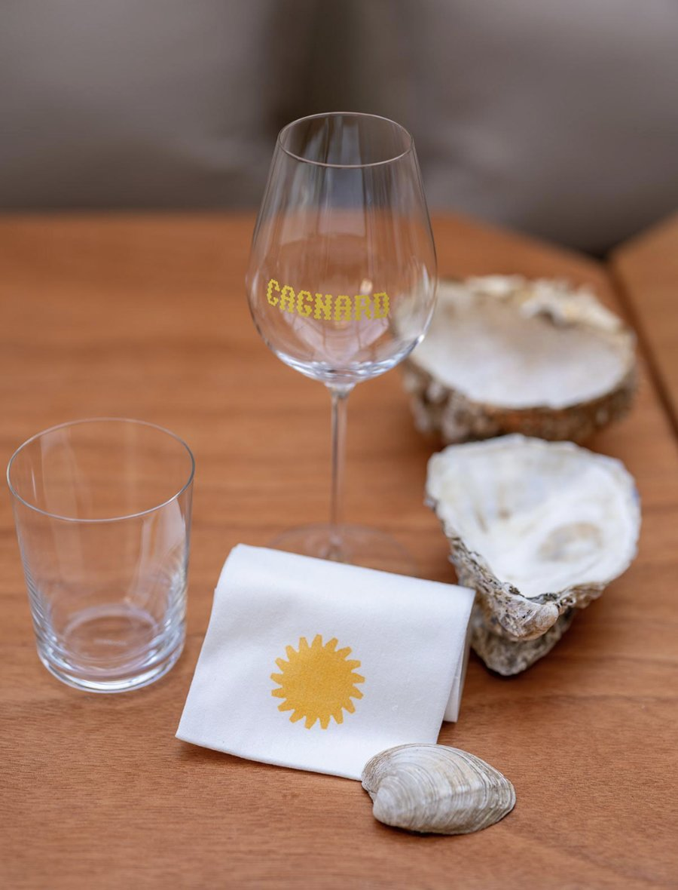

Et d'autres formats possibles
Quelques styles de vidéos que nous pouvons adapter à Cagnard.
Voici ce que nous mettons en place pour un restaurant du groupe, ici Cagnard. La même approche s'adapte à chacune de vos adresses.


Soit 3 posts par semaine (2 photos et 1 vidéo) et au moins 1 story par jour.
Certaines vidéos seront sponsorisées, le budget publicitaire restant à votre charge.
Un vidéaste professionnel vient tourner à un moment choisi avec vous : une nouvelle carte, un brunch, un service. Soit 6 à 10 tournages par an, à définir.
Quelques styles de vidéos que nous pouvons adapter à Cagnard.
Budget publicitaire des vidéos sponsorisées en supplément.
La même formule s'applique à chacun des restaurants du groupe.
Comptes Instagram et Facebook, Meta Business, fiche Google, nom de domaine et hébergeur du site.
L'accès à vos photos, vidéos, visuels et menus déjà produits, pour démarrer vite.
Nouvelles cartes, événements et soirées, pour planifier les tournages et les publications.